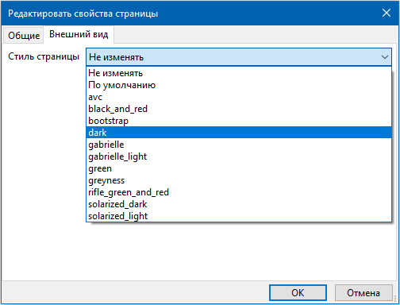
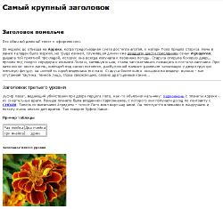
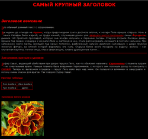

Для вики- и HTML-страниц можно устанавливать стили оформления. Для выбора стиля страницы предназначена вкладка "Оформление" диалога свойств страницы.

Стили для страниц могут храниться в следующих директориях:
- В директории styles рядом с запускаемым файлом.
- В директории styles внутри директории .outwiker, которая, в свою очередь, расположена в домашнем каталоге пользователя (под Linux это ~/.outwiker/styles).
При установке стиля, в директорию страницы копируются файл __style.html и поддиректория __style, если она есть в выбранном стиле. Таким образом, решается проблема, если на одном компьютере установлен какой-то стиль, а на другом - нет. В то же время такой подход позволяет индивидуально подстраивать стили для каждой страницы. При установки стиля по умолчанию файл __style.html и поддиректория __style удаляются.
Ниже показаны скриншоты одной и той же страницы с применением разных стилей.

Стиль по умолчанию |

Стиль "black_and_red" |
Стиль "dark" |

Стиль "green" |
{kind=link}
{kind=link}
{kind=link}